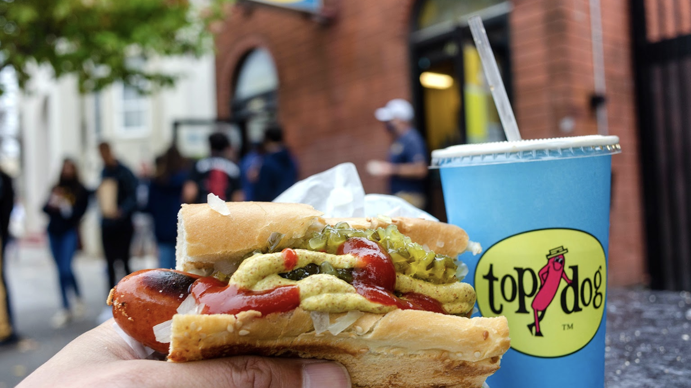

“ Top Dog, when food not only tasted great, but was fun! ”

Please try our competitors. You'll discover we do it different, we do it better.
Top Dog grew out of a boy's love of sausage, a staple in his German immigrants'
New York home over the WWII years. Steaks? Tubesteaks! His paper route to a
well-mixed neighborhood assured that Italian, Polish, even Hungarian sausages
were soon no strangers to that developing appetite and palate. Nor had he far
to go to a cart or stand offering kosher style "Franks", usually steeped but
better off the griddle.